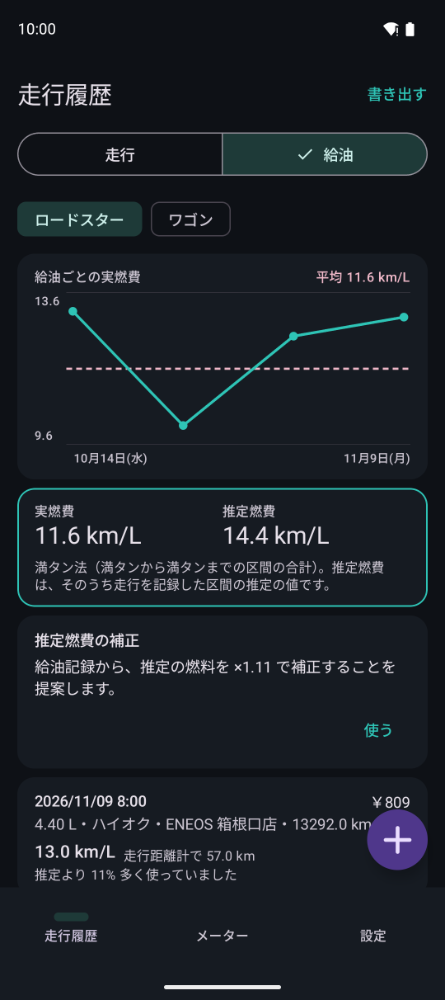
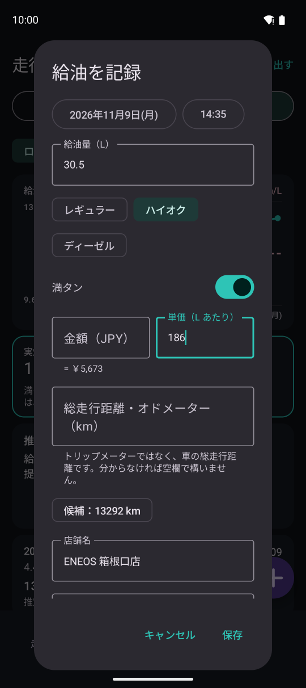

給油記録
給油を記録すると満タンから満タンまでの実燃費が算出できます。推定燃費とのずれも分かり、推定燃費を補正できます。

1234567走行履歴の上の「給油」画面です。
- 1車両の切り替え
- 2給油ごとの実燃費の推移と平均（破線）
- 3通算の実燃費と推定燃費
- 4推定燃費の補正の提案
- 5給油サマリ。満タンのスイッチがオンの場合はその区間の実燃費と推定とのずれ
- 6給油記録を追加します
- 7CSV で書き出します
給油を記録する

1234567- 1日時（過去の時刻にもできます）
- 2給油量
- 3燃料の種類（前回と同じものが選択されています）
- 4満タンにしたかのスイッチ
- 5金額・単価（給油量と合わせて 2 つ入れると残りを計算します）
- 6車の総走行距離（オドメーター値）。前回の値＋記録した走行距離が候補に出ます
- 7店舗名。前に入れた名前が候補に出ます
この画面の下にはメモと「前の給油を記録し忘れた」スイッチがあります。記録し忘れた給油があるとその区間の実燃費は算出しません。
実燃費と補正
- 実燃費は満タン法です：満タンから次の満タンまでの距離 ÷ その間に入れた燃料
- 距離は総走行距離を入れていればその差、なければその間に記録した走行の距離です
- 推定燃費とのずれ：同じ区間に記録した走行の推定の燃料と、実際に入れた燃料を比べます
- 補正の提案は、総走行距離を入力していて、その距離の 9 割以上を記録している区間（直近 3 区間まで）から計算します
- 「使う」をタップするとその車両の推定燃費（走行・メーター・ミニウィンドウ・リプレイ・書き出し）に係数を掛けます。記録したデータはそのままなのでいつでも戻せます
- 補正を使うのはプレミアムプランの機能です。給油の記録・実燃費・比較は無料です